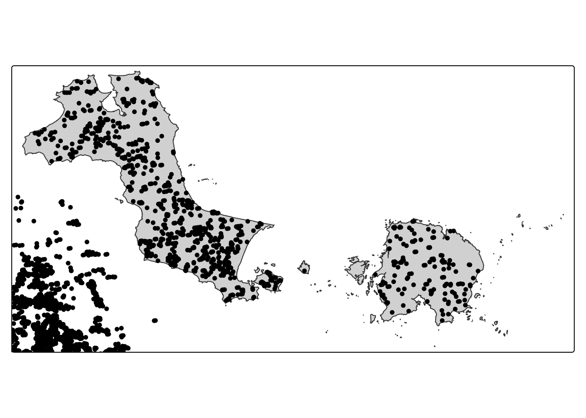
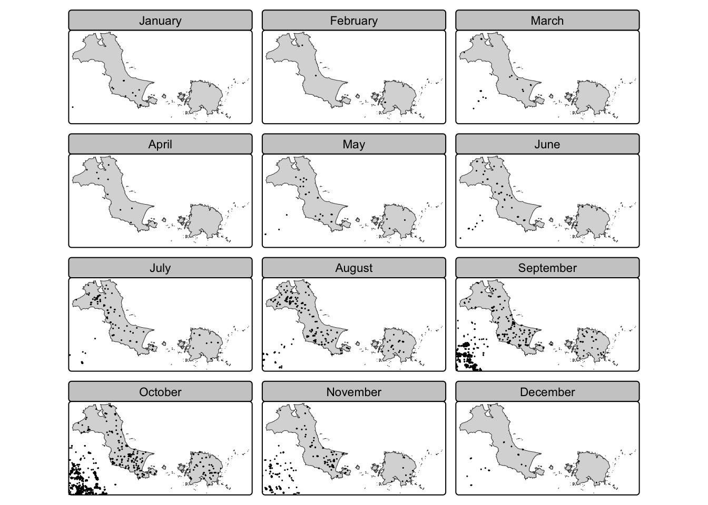
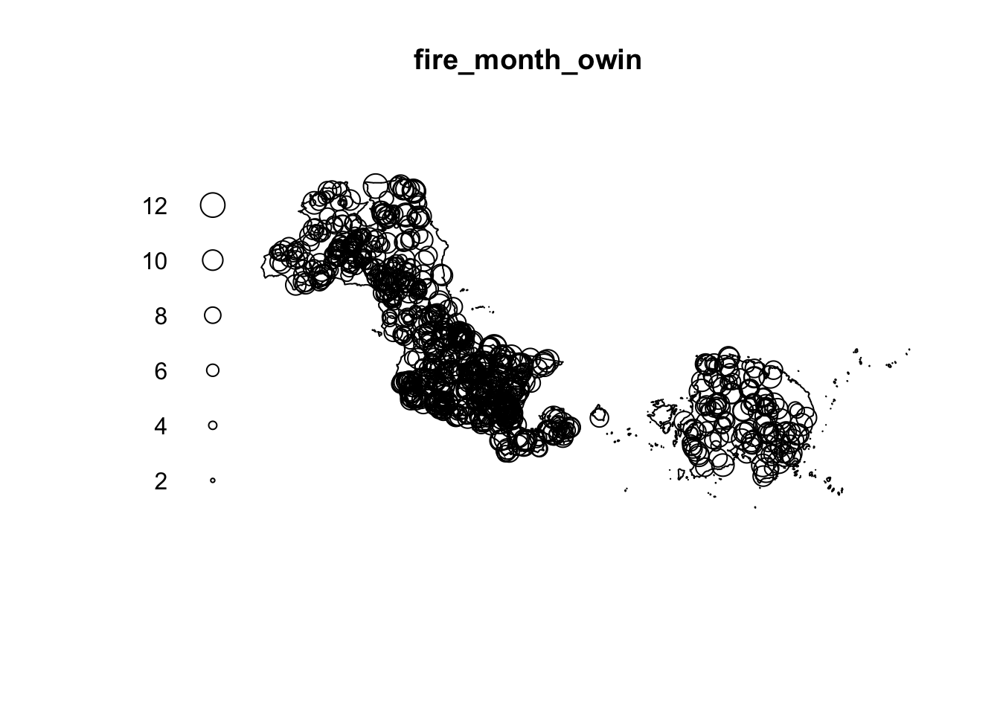
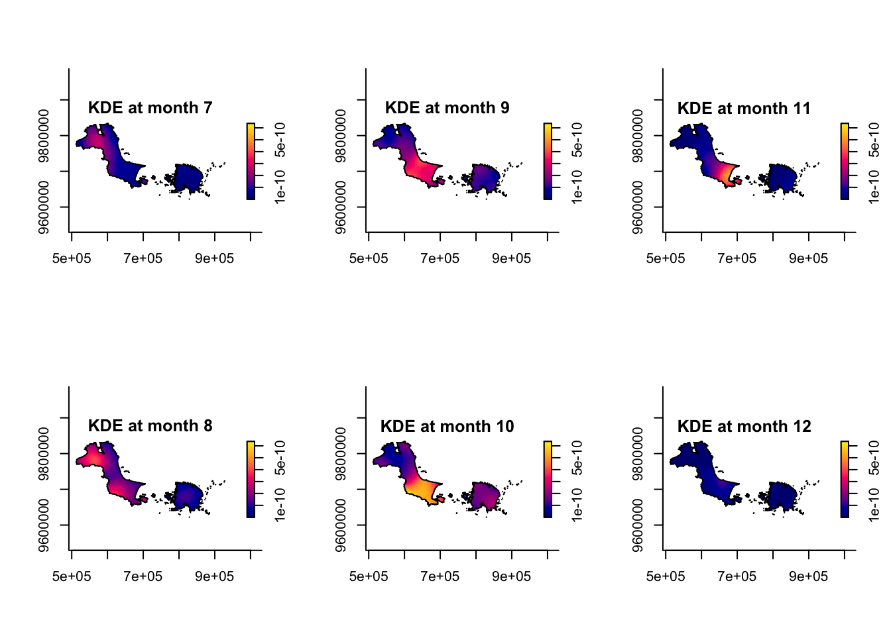
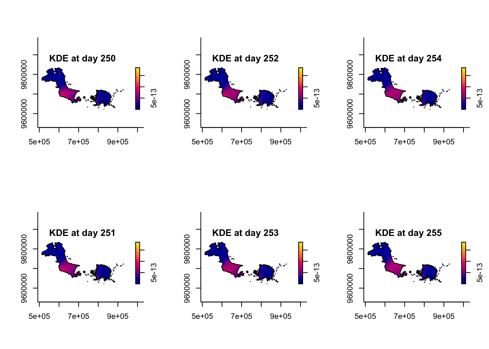
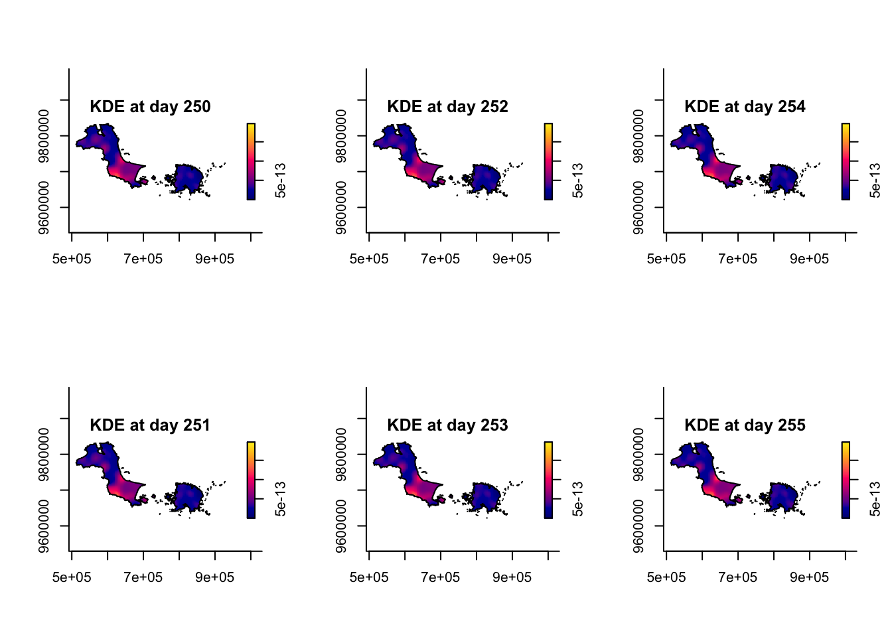
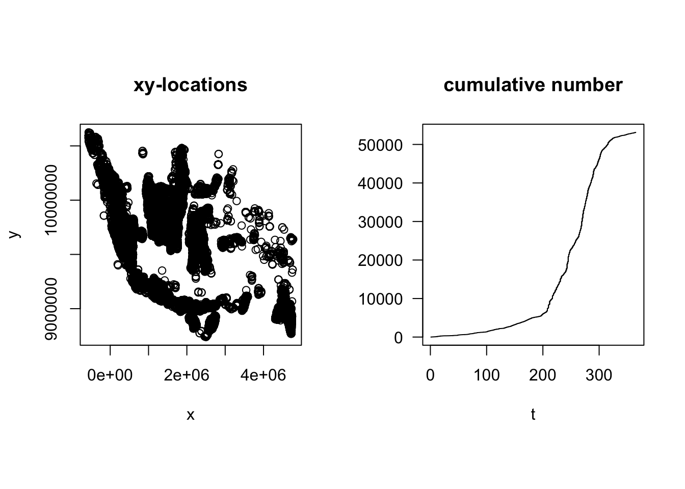
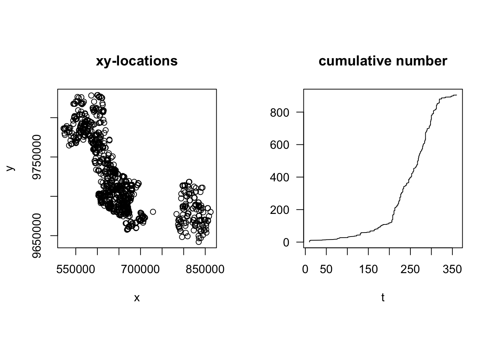

pacman::p_load(sf, spatstat, sparr, tmap, stpp, tidyverse)Hands-on Exercise 03: Spatio-Temporal Point Patterns Analysis
6 Spatio-Temporal Point Patterns Analysis
idn <- st_read("data/rawdata/idn_admin4.shp")Reading layer `idn_admin4' from data source
`/Users/mengxinyu/ISSS626-GAA/Hands-on_Ex/Hands-on_Ex03/data/rawdata/idn_admin4.shp'
using driver `ESRI Shapefile'
Simple feature collection with 81912 features and 36 fields
Geometry type: MULTIPOLYGON
Dimension: XY
Bounding box: xmin: 95.01079 ymin: -11.00762 xmax: 141.0194 ymax: 6.07693
Geodetic CRS: WGS 84colnames(idn) [1] "adm4_name" "adm4_name1" "adm4_name2" "adm4_name3" "adm4_pcode"
[6] "adm3_name" "adm3_name1" "adm3_name2" "adm3_name3" "adm3_pcode"
[11] "adm2_name" "adm2_name1" "adm2_name2" "adm2_name3" "adm2_pcode"
[16] "adm1_name" "adm1_name1" "adm1_name2" "adm1_name3" "adm1_pcode"
[21] "adm0_name" "adm0_name1" "adm0_name2" "adm0_name3" "adm0_pcode"
[26] "valid_on" "valid_to" "area_sqkm" "version" "lang"
[31] "lang1" "lang2" "lang3" "adm4_ref_n" "center_lat"
[36] "center_lon" "geometry" kbb_raw <- idn %>%
filter(adm1_name == "Kepulauan Bangka Belitung")
st_write(kbb_raw,
"data/rawdata/Kepulauan_Bangka_Belitung.shp",
delete_dsn = TRUE)Deleting source `data/rawdata/Kepulauan_Bangka_Belitung.shp' using driver `ESRI Shapefile'
Writing layer `Kepulauan_Bangka_Belitung' to data source
`data/rawdata/Kepulauan_Bangka_Belitung.shp' using driver `ESRI Shapefile'
Writing 391 features with 36 fields and geometry type Multi Polygon.6.1 Importing and Preparing Study Area
6.1.1 Importing study area
kbb_sf <- st_read(dsn = "data/rawdata",
layer = "Kepulauan_Bangka_Belitung") %>%
st_union() %>%
st_zm(drop = TRUE, what = "ZM") %>%
st_transform(crs = 32748)Reading layer `Kepulauan_Bangka_Belitung' from data source
`/Users/mengxinyu/ISSS626-GAA/Hands-on_Ex/Hands-on_Ex03/data/rawdata'
using driver `ESRI Shapefile'
Simple feature collection with 391 features and 36 fields
Geometry type: MULTIPOLYGON
Dimension: XY
Bounding box: xmin: 105.1084 ymin: -3.416903 xmax: 108.848 ymax: -1.501757
Geodetic CRS: WGS 846.1.2 Converting OWIN
kbb_owin <- as.owin(kbb_sf)
kbb_owinwindow: polygonal boundary
enclosing rectangle: [512053.7, 928107.3] x [9621818, 9833989] unitsclass(kbb_owin)[1] "owin"6.2 Importing and Preparing Forest Fire data
fire <- read_csv("data/rawdata/fire_archive_M-C61_800295.csv")
colnames(fire) [1] "latitude" "longitude" "brightness" "scan" "track"
[6] "acq_date" "acq_time" "satellite" "instrument" "confidence"
[11] "version" "bright_t31" "frp" "daynight" "type" fire_sf <- read_csv("data/rawdata/fire_archive_M-C61_800295.csv") %>%
st_as_sf(coords = c("longitude", "latitude"),
crs = 4326) %>%
st_transform(crs = 32748)6.3 Visualising the Fire Points
6.3.1 Overall plot
tm_shape(kbb_sf)+
tm_polygons() +
tm_shape(fire_sf) +
tm_dots()
fire_sf <- fire_sf %>%
mutate(DayofYear = yday(acq_date)) %>%
mutate(Month_num = month(acq_date)) %>%
mutate(Month_fac = month(acq_date,
label = TRUE,
abbr = FALSE))6.3.2 Visuaising geographic distribution of forest fires by month
tm_shape(kbb_sf)+
tm_polygons() +
tm_shape(fire_sf) +
tm_dots(size = 0.1) +
tm_facets(by="Month_fac",
free.coords=FALSE,
drop.units = TRUE)
6.4 Computing STKDE by Month
6.4.1 Extracting forest fires by month
fire_month <- fire_sf %>%
select(Month_num)6.4.2 Creating ppp
fire_month_ppp <- as.ppp(fire_month)
fire_month_pppMarked planar point pattern: 53128 points
marks are numeric, of storage type 'double'
window: rectangle = [-568058, 4774682] x [8738630, 10624406] unitssummary(fire_month_ppp)Marked planar point pattern: 53128 points
Average intensity 5.273138e-09 points per square unit
*Pattern contains duplicated points*
Coordinates are given to 14 decimal places
marks are numeric, of type 'double'
Summary:
Min. 1st Qu. Median Mean 3rd Qu. Max.
1.000 8.000 9.000 8.717 10.000 12.000
Window: rectangle = [-568058, 4774682] x [8738630, 10624406] units
(5343000 x 1886000 units)
Window area = 1.00752e+13 square unitsfire_month_ppp <- rjitter(fire_month_ppp, retry = TRUE, nsim = 1, drop = TRUE)any(duplicated(fire_month_ppp))[1] FALSE6.4.3 Including Owin object
fire_month_owin <- fire_month_ppp[kbb_owin]
summary(fire_month_owin)Marked planar point pattern: 903 points
Average intensity 5.404034e-08 points per square unit
Coordinates are given to 10 decimal places
marks are numeric, of type 'double'
Summary:
Min. 1st Qu. Median Mean 3rd Qu. Max.
1.000 8.000 9.000 8.645 10.000 12.000
Window: polygonal boundary
278 separate polygons (no holes)
vertices area relative.area
polygon 1 16176 1.15467e+10 6.91e-01
polygon 2 20 1.26644e+04 7.58e-07
polygon 3 23 9.26148e+04 5.54e-06
polygon 4 30 3.37145e+04 2.02e-06
polygon 5 54 3.25210e+05 1.95e-05
polygon 6 36 1.30251e+06 7.79e-05
polygon 7 133 1.16489e+06 6.97e-05
polygon 8 70 1.91331e+05 1.15e-05
polygon 9 117 1.51938e+05 9.09e-06
polygon 10 96 1.14343e+05 6.84e-06
polygon 11 24 4.57388e+03 2.74e-07
polygon 12 25 1.18350e+04 7.08e-07
polygon 13 131 1.52336e+05 9.12e-06
polygon 14 41 1.08051e+04 6.47e-07
polygon 15 54 3.46933e+05 2.08e-05
polygon 16 72 2.15827e+05 1.29e-05
polygon 17 27 1.89588e+03 1.13e-07
polygon 18 80 1.05646e+05 6.32e-06
polygon 19 24 4.30354e+03 2.58e-07
polygon 20 120 1.64767e+05 9.86e-06
polygon 21 43 1.15924e+04 6.94e-07
polygon 22 19 3.54741e+03 2.12e-07
polygon 23 330 3.08593e+06 1.85e-04
polygon 24 191 2.36948e+06 1.42e-04
polygon 25 82 8.83099e+04 5.28e-06
polygon 26 49 6.13131e+04 3.67e-06
polygon 27 129 7.65905e+04 4.58e-06
polygon 28 5 1.73957e+04 1.04e-06
polygon 29 6444 4.61702e+09 2.76e-01
polygon 30 4 6.36011e+03 3.81e-07
polygon 31 16 1.18305e+05 7.08e-06
polygon 32 5 2.11524e+04 1.27e-06
polygon 33 12 3.54495e+04 2.12e-06
polygon 34 13 6.20225e+04 3.71e-06
polygon 35 8 1.23192e+04 7.37e-07
polygon 36 5 1.08324e+04 6.48e-07
polygon 37 5 9.14466e+03 5.47e-07
polygon 38 6 9.61182e+03 5.75e-07
polygon 39 31 1.54535e+06 9.25e-05
polygon 40 9 2.89833e+04 1.73e-06
polygon 41 11 2.76319e+04 1.65e-06
polygon 42 12 8.99519e+04 5.38e-06
polygon 43 15 5.42899e+04 3.25e-06
polygon 44 9 1.59051e+04 9.52e-07
polygon 45 6 1.35402e+04 8.10e-07
polygon 46 4 4.29114e+03 2.57e-07
polygon 47 23 1.76941e+05 1.06e-05
polygon 48 46 4.35817e+04 2.61e-06
polygon 49 5 6.83234e+03 4.09e-07
polygon 50 5 6.67681e+03 4.00e-07
polygon 51 5 2.24960e+03 1.35e-07
polygon 52 7 2.62410e+04 1.57e-06
polygon 53 9 1.19871e+04 7.17e-07
polygon 54 8 2.25166e+04 1.35e-06
polygon 55 6 1.21530e+04 7.27e-07
polygon 56 5 8.76372e+03 5.24e-07
polygon 57 9 2.28011e+04 1.36e-06
polygon 58 6 9.21520e+03 5.51e-07
polygon 59 49 1.00152e+05 5.99e-06
polygon 60 5 4.45701e+03 2.67e-07
polygon 61 4 2.90445e+03 1.74e-07
polygon 62 4 3.68660e+03 2.21e-07
polygon 63 69 9.91665e+04 5.93e-06
polygon 64 5 3.03755e+03 1.82e-07
polygon 65 6 1.05159e+04 6.29e-07
polygon 66 12 9.48324e+03 5.68e-07
polygon 67 13 6.95065e+04 4.16e-06
polygon 68 34 2.01268e+05 1.20e-05
polygon 69 229 1.23405e+06 7.39e-05
polygon 70 4 2.60396e+03 1.56e-07
polygon 71 7 8.47987e+03 5.07e-07
polygon 72 5 8.09566e+03 4.84e-07
polygon 73 95 2.08272e+05 1.25e-05
polygon 74 18 7.79534e+04 4.67e-06
polygon 75 24 1.58871e+04 9.51e-07
polygon 76 4 8.84551e+02 5.29e-08
polygon 77 44 4.25752e+04 2.55e-06
polygon 78 5 4.40652e+03 2.64e-07
polygon 79 4 2.45347e+03 1.47e-07
polygon 80 5 4.70738e+03 2.82e-07
polygon 81 217 2.22673e+06 1.33e-04
polygon 82 65 5.45704e+04 3.27e-06
polygon 83 7 4.52332e+03 2.71e-07
polygon 84 6 1.47384e+04 8.82e-07
polygon 85 6 1.35523e+04 8.11e-07
polygon 86 52 9.01072e+04 5.39e-06
polygon 87 4 1.53570e+03 9.19e-08
polygon 88 32 4.34407e+04 2.60e-06
polygon 89 147 5.46546e+05 3.27e-05
polygon 90 36 7.39284e+04 4.42e-06
polygon 91 42 9.17464e+04 5.49e-06
polygon 92 141 1.10139e+06 6.59e-05
polygon 93 96 2.55417e+05 1.53e-05
polygon 94 81 3.75480e+04 2.25e-06
polygon 95 74 9.11239e+05 5.45e-05
polygon 96 5 4.23910e+03 2.54e-07
polygon 97 48 1.10206e+05 6.60e-06
polygon 98 6 1.00635e+04 6.02e-07
polygon 99 33 2.35528e+04 1.41e-06
polygon 100 120 3.80491e+05 2.28e-05
polygon 101 20 3.14002e+04 1.88e-06
polygon 102 42 1.21240e+05 7.26e-06
polygon 103 24 3.83264e+04 2.29e-06
polygon 104 88 4.56947e+05 2.73e-05
polygon 105 20 1.78311e+04 1.07e-06
polygon 106 20 2.39230e+04 1.43e-06
polygon 107 5 6.65848e+03 3.98e-07
polygon 108 5 5.41794e+03 3.24e-07
polygon 109 53 4.55018e+05 2.72e-05
polygon 110 263 1.76197e+07 1.05e-03
polygon 111 4 6.79553e+03 4.07e-07
polygon 112 17 5.84071e+03 3.50e-07
polygon 113 25 2.16665e+05 1.30e-05
polygon 114 9 7.99698e+03 4.79e-07
polygon 115 8 3.28857e+03 1.97e-07
polygon 116 10 1.13477e+04 6.79e-07
polygon 117 45 1.05244e+05 6.30e-06
polygon 118 7 4.67575e+03 2.80e-07
polygon 119 1477 4.81100e+07 2.88e-03
polygon 120 650 1.19875e+08 7.17e-03
polygon 121 68 3.72768e+06 2.23e-04
polygon 122 10 1.01915e+05 6.10e-06
polygon 123 19 8.26882e+04 4.95e-06
polygon 124 17 4.00986e+04 2.40e-06
polygon 125 11 4.05800e+04 2.43e-06
polygon 126 111 1.46838e+06 8.79e-05
polygon 127 112 3.73963e+06 2.24e-04
polygon 128 19 1.91739e+04 1.15e-06
polygon 129 73 3.61915e+06 2.17e-04
polygon 130 10 3.05705e+04 1.83e-06
polygon 131 6 1.62985e+04 9.75e-07
polygon 132 127 2.10345e+05 1.26e-05
polygon 133 8 2.09365e+04 1.25e-06
polygon 134 9 2.23158e+04 1.34e-06
polygon 135 11 1.96459e+04 1.18e-06
polygon 136 145 7.13727e+06 4.27e-04
polygon 137 190 1.81834e+05 1.09e-05
polygon 138 75 2.06444e+06 1.24e-04
polygon 139 39 2.64974e+04 1.59e-06
polygon 140 2813 2.13023e+08 1.27e-02
polygon 141 26 2.21137e+05 1.32e-05
polygon 142 6 6.87472e+03 4.11e-07
polygon 143 31 1.67778e+06 1.00e-04
polygon 144 7 9.00061e+03 5.39e-07
polygon 145 12 6.30884e+04 3.78e-06
polygon 146 202 2.25185e+07 1.35e-03
polygon 147 46 2.39825e+06 1.44e-04
polygon 148 50 1.07270e+04 6.42e-07
polygon 149 8 4.61444e+04 2.76e-06
polygon 150 7 3.16310e+04 1.89e-06
polygon 151 5 6.49748e+03 3.89e-07
polygon 152 12 2.17426e+04 1.30e-06
polygon 153 5 7.19829e+03 4.31e-07
polygon 154 11 6.58154e+05 3.94e-05
polygon 155 160 1.11858e+06 6.69e-05
polygon 156 106 3.97298e+05 2.38e-05
polygon 157 14 3.77575e+05 2.26e-05
polygon 158 27 1.21313e+06 7.26e-05
polygon 159 360 7.99522e+04 4.78e-06
polygon 160 56 6.47301e+04 3.87e-06
polygon 161 360 7.21524e+04 4.32e-06
polygon 162 360 3.31507e+04 1.98e-06
polygon 163 360 3.90012e+04 2.33e-06
polygon 164 59 5.31603e+06 3.18e-04
polygon 165 48 1.76671e+06 1.06e-04
polygon 166 35 5.03510e+04 3.01e-06
polygon 167 58 1.83939e+04 1.10e-06
polygon 168 21 5.33448e+03 3.19e-07
polygon 169 249 3.09426e+06 1.85e-04
polygon 170 28 1.99132e+05 1.19e-05
polygon 171 21 4.52072e+05 2.71e-05
polygon 172 14 5.66642e+04 3.39e-06
polygon 173 12 1.09826e+05 6.57e-06
polygon 174 15 1.37135e+06 8.21e-05
polygon 175 6 1.22311e+05 7.32e-06
polygon 176 47 2.41118e+05 1.44e-05
polygon 177 7 2.79839e+04 1.67e-06
polygon 178 46 1.72672e+06 1.03e-04
polygon 179 13 6.36559e+04 3.81e-06
polygon 180 11 7.02064e+05 4.20e-05
polygon 181 47 9.13823e+05 5.47e-05
polygon 182 62 3.95150e+06 2.36e-04
polygon 183 9 4.34654e+05 2.60e-05
polygon 184 14 4.20828e+04 2.52e-06
polygon 185 20 5.14005e+03 3.08e-07
polygon 186 31 7.44742e+05 4.46e-05
polygon 187 18 4.11233e+05 2.46e-05
polygon 188 25 7.73779e+03 4.63e-07
polygon 189 8 3.86018e+04 2.31e-06
polygon 190 210 7.46360e+06 4.47e-04
polygon 191 4 9.19985e+03 5.51e-07
polygon 192 14 2.75390e+05 1.65e-05
polygon 193 9 9.63810e+03 5.77e-07
polygon 194 9 6.16370e+04 3.69e-06
polygon 195 10 1.04977e+05 6.28e-06
polygon 196 8 8.75224e+04 5.24e-06
polygon 197 5 1.84010e+04 1.10e-06
polygon 198 5 3.30308e+03 1.98e-07
polygon 199 13 3.15608e+04 1.89e-06
polygon 200 67 3.93597e+05 2.36e-05
polygon 201 4 2.83736e+03 1.70e-07
polygon 202 16 4.91732e+03 2.94e-07
polygon 203 4 1.26776e+03 7.59e-08
polygon 204 8 1.67293e+04 1.00e-06
polygon 205 12 2.45852e+04 1.47e-06
polygon 206 12 5.95782e+04 3.57e-06
polygon 207 50 5.34706e+03 3.20e-07
polygon 208 38 1.08273e+04 6.48e-07
polygon 209 36 1.59140e+04 9.52e-07
polygon 210 21 1.90132e+03 1.14e-07
polygon 211 34 3.85385e+06 2.31e-04
polygon 212 44 7.02208e+03 4.20e-07
polygon 213 46 5.81229e+03 3.48e-07
polygon 214 31 4.14222e+03 2.48e-07
polygon 215 16 4.56058e+05 2.73e-05
polygon 216 29 1.42452e+04 8.53e-07
polygon 217 38 2.65576e+04 1.59e-06
polygon 218 27 4.58869e+03 2.75e-07
polygon 219 96 5.26088e+05 3.15e-05
polygon 220 61 1.00655e+05 6.02e-06
polygon 221 31 7.13048e+04 4.27e-06
polygon 222 85 1.37243e+06 8.21e-05
polygon 223 180 8.26968e+05 4.95e-05
polygon 224 59 1.98986e+05 1.19e-05
polygon 225 116 3.13325e+05 1.88e-05
polygon 226 134 4.76075e+05 2.85e-05
polygon 227 102 1.63410e+07 9.78e-04
polygon 228 21 6.42532e+03 3.85e-07
polygon 229 10 7.72548e+03 4.62e-07
polygon 230 205 1.42142e+06 8.51e-05
polygon 231 125 2.33639e+06 1.40e-04
polygon 232 32 2.58895e+04 1.55e-06
polygon 233 25 2.06544e+04 1.24e-06
polygon 234 87 1.25178e+06 7.49e-05
polygon 235 40 4.05100e+04 2.42e-06
polygon 236 10 5.04046e+04 3.02e-06
polygon 237 6 1.12481e+04 6.73e-07
polygon 238 40 1.56824e+05 9.39e-06
polygon 239 66 5.25078e+04 3.14e-06
polygon 240 8 1.11133e+04 6.65e-07
polygon 241 11 1.53991e+03 9.22e-08
polygon 242 18 4.61307e+03 2.76e-07
polygon 243 41 4.12896e+04 2.47e-06
polygon 244 7 3.03565e+03 1.82e-07
polygon 245 19 7.54562e+03 4.52e-07
polygon 246 18 8.34406e+03 4.99e-07
polygon 247 26 5.16289e+05 3.09e-05
polygon 248 13 9.23973e+04 5.53e-06
polygon 249 25 4.18386e+04 2.50e-06
polygon 250 7 3.85109e+03 2.30e-07
polygon 251 82 4.38488e+05 2.62e-05
polygon 252 165 3.46331e+06 2.07e-04
polygon 253 11 5.22200e+03 3.13e-07
polygon 254 13 3.28209e+04 1.96e-06
polygon 255 6 3.00930e+04 1.80e-06
polygon 256 7 1.13351e+04 6.78e-07
polygon 257 13 2.03132e+05 1.22e-05
polygon 258 38 2.87613e+04 1.72e-06
polygon 259 7 1.13203e+04 6.77e-07
polygon 260 15 4.10660e+03 2.46e-07
polygon 261 44 1.67056e+05 1.00e-05
polygon 262 11 6.66261e+04 3.99e-06
polygon 263 129 2.29313e+06 1.37e-04
polygon 264 6 7.23358e+04 4.33e-06
polygon 265 24 6.50053e+03 3.89e-07
polygon 266 107 1.06864e+06 6.40e-05
polygon 267 9 2.30454e+04 1.38e-06
polygon 268 38 9.13816e+03 5.47e-07
polygon 269 72 1.08578e+05 6.50e-06
polygon 270 64 2.19772e+05 1.32e-05
polygon 271 25 2.58054e+05 1.54e-05
polygon 272 26 4.59971e+04 2.75e-06
polygon 273 59 8.30359e+04 4.97e-06
polygon 274 83 1.13991e+06 6.82e-05
polygon 275 11 3.01697e+04 1.81e-06
polygon 276 14 1.30442e+05 7.81e-06
polygon 277 22 2.37056e+05 1.42e-05
polygon 278 23 1.84825e+05 1.11e-05
enclosing rectangle: [512053.7, 928107.3] x [9621818, 9833989] units
(416100 x 212200 units)
Window area = 16709700000 square units
Fraction of frame area: 0.189plot(fire_month_owin)
6.4.4 Computing Spatio-temporal KDE
st_kde <- spattemp.density(fire_month_owin)
summary(st_kde)Spatiotemporal Kernel Density Estimate
Bandwidths
h = 19052.08 (spatial)
lambda = 0.0264 (temporal)
No. of observations
903
Spatial bound
Type: polygonal
2D enclosure: [512053.7, 928107.3] x [9621818, 9833989]
Temporal bound
[1, 12]
Evaluation
128 x 128 x 12 trivariate lattice
Density range: [4.10577e-40, 6.36957e-10]6.4.5 Plotting the spatio-temporal KDE object
tims <- c(7,8,9,10,11,12)
par(mfcol=c(2,3))
for(i in tims){
plot(st_kde, i,
override.par=FALSE,
fix.range=TRUE,
main=paste("KDE at month",i))
}
6.5 Computing STKDE by Day of Year
6.5.1 Creating ppp object
fire_yday_ppp <- fire_sf %>%
select(DayofYear) %>%
as.ppp()6.5.2 Including Owin object
fire_yday_owin <- fire_yday_ppp[kbb_owin]
summary(fire_yday_owin)Marked planar point pattern: 905 points
Average intensity 5.416003e-08 points per square unit
Coordinates are given to 10 decimal places
marks are numeric, of type 'double'
Summary:
Min. 1st Qu. Median Mean 3rd Qu. Max.
10.0 220.0 258.0 247.8 288.0 360.0
Window: polygonal boundary
278 separate polygons (no holes)
vertices area relative.area
polygon 1 16176 1.15467e+10 6.91e-01
polygon 2 20 1.26644e+04 7.58e-07
polygon 3 23 9.26148e+04 5.54e-06
polygon 4 30 3.37145e+04 2.02e-06
polygon 5 54 3.25210e+05 1.95e-05
polygon 6 36 1.30251e+06 7.79e-05
polygon 7 133 1.16489e+06 6.97e-05
polygon 8 70 1.91331e+05 1.15e-05
polygon 9 117 1.51938e+05 9.09e-06
polygon 10 96 1.14343e+05 6.84e-06
polygon 11 24 4.57388e+03 2.74e-07
polygon 12 25 1.18350e+04 7.08e-07
polygon 13 131 1.52336e+05 9.12e-06
polygon 14 41 1.08051e+04 6.47e-07
polygon 15 54 3.46933e+05 2.08e-05
polygon 16 72 2.15827e+05 1.29e-05
polygon 17 27 1.89588e+03 1.13e-07
polygon 18 80 1.05646e+05 6.32e-06
polygon 19 24 4.30354e+03 2.58e-07
polygon 20 120 1.64767e+05 9.86e-06
polygon 21 43 1.15924e+04 6.94e-07
polygon 22 19 3.54741e+03 2.12e-07
polygon 23 330 3.08593e+06 1.85e-04
polygon 24 191 2.36948e+06 1.42e-04
polygon 25 82 8.83099e+04 5.28e-06
polygon 26 49 6.13131e+04 3.67e-06
polygon 27 129 7.65905e+04 4.58e-06
polygon 28 5 1.73957e+04 1.04e-06
polygon 29 6444 4.61702e+09 2.76e-01
polygon 30 4 6.36011e+03 3.81e-07
polygon 31 16 1.18305e+05 7.08e-06
polygon 32 5 2.11524e+04 1.27e-06
polygon 33 12 3.54495e+04 2.12e-06
polygon 34 13 6.20225e+04 3.71e-06
polygon 35 8 1.23192e+04 7.37e-07
polygon 36 5 1.08324e+04 6.48e-07
polygon 37 5 9.14466e+03 5.47e-07
polygon 38 6 9.61182e+03 5.75e-07
polygon 39 31 1.54535e+06 9.25e-05
polygon 40 9 2.89833e+04 1.73e-06
polygon 41 11 2.76319e+04 1.65e-06
polygon 42 12 8.99519e+04 5.38e-06
polygon 43 15 5.42899e+04 3.25e-06
polygon 44 9 1.59051e+04 9.52e-07
polygon 45 6 1.35402e+04 8.10e-07
polygon 46 4 4.29114e+03 2.57e-07
polygon 47 23 1.76941e+05 1.06e-05
polygon 48 46 4.35817e+04 2.61e-06
polygon 49 5 6.83234e+03 4.09e-07
polygon 50 5 6.67681e+03 4.00e-07
polygon 51 5 2.24960e+03 1.35e-07
polygon 52 7 2.62410e+04 1.57e-06
polygon 53 9 1.19871e+04 7.17e-07
polygon 54 8 2.25166e+04 1.35e-06
polygon 55 6 1.21530e+04 7.27e-07
polygon 56 5 8.76372e+03 5.24e-07
polygon 57 9 2.28011e+04 1.36e-06
polygon 58 6 9.21520e+03 5.51e-07
polygon 59 49 1.00152e+05 5.99e-06
polygon 60 5 4.45701e+03 2.67e-07
polygon 61 4 2.90445e+03 1.74e-07
polygon 62 4 3.68660e+03 2.21e-07
polygon 63 69 9.91665e+04 5.93e-06
polygon 64 5 3.03755e+03 1.82e-07
polygon 65 6 1.05159e+04 6.29e-07
polygon 66 12 9.48324e+03 5.68e-07
polygon 67 13 6.95065e+04 4.16e-06
polygon 68 34 2.01268e+05 1.20e-05
polygon 69 229 1.23405e+06 7.39e-05
polygon 70 4 2.60396e+03 1.56e-07
polygon 71 7 8.47987e+03 5.07e-07
polygon 72 5 8.09566e+03 4.84e-07
polygon 73 95 2.08272e+05 1.25e-05
polygon 74 18 7.79534e+04 4.67e-06
polygon 75 24 1.58871e+04 9.51e-07
polygon 76 4 8.84551e+02 5.29e-08
polygon 77 44 4.25752e+04 2.55e-06
polygon 78 5 4.40652e+03 2.64e-07
polygon 79 4 2.45347e+03 1.47e-07
polygon 80 5 4.70738e+03 2.82e-07
polygon 81 217 2.22673e+06 1.33e-04
polygon 82 65 5.45704e+04 3.27e-06
polygon 83 7 4.52332e+03 2.71e-07
polygon 84 6 1.47384e+04 8.82e-07
polygon 85 6 1.35523e+04 8.11e-07
polygon 86 52 9.01072e+04 5.39e-06
polygon 87 4 1.53570e+03 9.19e-08
polygon 88 32 4.34407e+04 2.60e-06
polygon 89 147 5.46546e+05 3.27e-05
polygon 90 36 7.39284e+04 4.42e-06
polygon 91 42 9.17464e+04 5.49e-06
polygon 92 141 1.10139e+06 6.59e-05
polygon 93 96 2.55417e+05 1.53e-05
polygon 94 81 3.75480e+04 2.25e-06
polygon 95 74 9.11239e+05 5.45e-05
polygon 96 5 4.23910e+03 2.54e-07
polygon 97 48 1.10206e+05 6.60e-06
polygon 98 6 1.00635e+04 6.02e-07
polygon 99 33 2.35528e+04 1.41e-06
polygon 100 120 3.80491e+05 2.28e-05
polygon 101 20 3.14002e+04 1.88e-06
polygon 102 42 1.21240e+05 7.26e-06
polygon 103 24 3.83264e+04 2.29e-06
polygon 104 88 4.56947e+05 2.73e-05
polygon 105 20 1.78311e+04 1.07e-06
polygon 106 20 2.39230e+04 1.43e-06
polygon 107 5 6.65848e+03 3.98e-07
polygon 108 5 5.41794e+03 3.24e-07
polygon 109 53 4.55018e+05 2.72e-05
polygon 110 263 1.76197e+07 1.05e-03
polygon 111 4 6.79553e+03 4.07e-07
polygon 112 17 5.84071e+03 3.50e-07
polygon 113 25 2.16665e+05 1.30e-05
polygon 114 9 7.99698e+03 4.79e-07
polygon 115 8 3.28857e+03 1.97e-07
polygon 116 10 1.13477e+04 6.79e-07
polygon 117 45 1.05244e+05 6.30e-06
polygon 118 7 4.67575e+03 2.80e-07
polygon 119 1477 4.81100e+07 2.88e-03
polygon 120 650 1.19875e+08 7.17e-03
polygon 121 68 3.72768e+06 2.23e-04
polygon 122 10 1.01915e+05 6.10e-06
polygon 123 19 8.26882e+04 4.95e-06
polygon 124 17 4.00986e+04 2.40e-06
polygon 125 11 4.05800e+04 2.43e-06
polygon 126 111 1.46838e+06 8.79e-05
polygon 127 112 3.73963e+06 2.24e-04
polygon 128 19 1.91739e+04 1.15e-06
polygon 129 73 3.61915e+06 2.17e-04
polygon 130 10 3.05705e+04 1.83e-06
polygon 131 6 1.62985e+04 9.75e-07
polygon 132 127 2.10345e+05 1.26e-05
polygon 133 8 2.09365e+04 1.25e-06
polygon 134 9 2.23158e+04 1.34e-06
polygon 135 11 1.96459e+04 1.18e-06
polygon 136 145 7.13727e+06 4.27e-04
polygon 137 190 1.81834e+05 1.09e-05
polygon 138 75 2.06444e+06 1.24e-04
polygon 139 39 2.64974e+04 1.59e-06
polygon 140 2813 2.13023e+08 1.27e-02
polygon 141 26 2.21137e+05 1.32e-05
polygon 142 6 6.87472e+03 4.11e-07
polygon 143 31 1.67778e+06 1.00e-04
polygon 144 7 9.00061e+03 5.39e-07
polygon 145 12 6.30884e+04 3.78e-06
polygon 146 202 2.25185e+07 1.35e-03
polygon 147 46 2.39825e+06 1.44e-04
polygon 148 50 1.07270e+04 6.42e-07
polygon 149 8 4.61444e+04 2.76e-06
polygon 150 7 3.16310e+04 1.89e-06
polygon 151 5 6.49748e+03 3.89e-07
polygon 152 12 2.17426e+04 1.30e-06
polygon 153 5 7.19829e+03 4.31e-07
polygon 154 11 6.58154e+05 3.94e-05
polygon 155 160 1.11858e+06 6.69e-05
polygon 156 106 3.97298e+05 2.38e-05
polygon 157 14 3.77575e+05 2.26e-05
polygon 158 27 1.21313e+06 7.26e-05
polygon 159 360 7.99522e+04 4.78e-06
polygon 160 56 6.47301e+04 3.87e-06
polygon 161 360 7.21524e+04 4.32e-06
polygon 162 360 3.31507e+04 1.98e-06
polygon 163 360 3.90012e+04 2.33e-06
polygon 164 59 5.31603e+06 3.18e-04
polygon 165 48 1.76671e+06 1.06e-04
polygon 166 35 5.03510e+04 3.01e-06
polygon 167 58 1.83939e+04 1.10e-06
polygon 168 21 5.33448e+03 3.19e-07
polygon 169 249 3.09426e+06 1.85e-04
polygon 170 28 1.99132e+05 1.19e-05
polygon 171 21 4.52072e+05 2.71e-05
polygon 172 14 5.66642e+04 3.39e-06
polygon 173 12 1.09826e+05 6.57e-06
polygon 174 15 1.37135e+06 8.21e-05
polygon 175 6 1.22311e+05 7.32e-06
polygon 176 47 2.41118e+05 1.44e-05
polygon 177 7 2.79839e+04 1.67e-06
polygon 178 46 1.72672e+06 1.03e-04
polygon 179 13 6.36559e+04 3.81e-06
polygon 180 11 7.02064e+05 4.20e-05
polygon 181 47 9.13823e+05 5.47e-05
polygon 182 62 3.95150e+06 2.36e-04
polygon 183 9 4.34654e+05 2.60e-05
polygon 184 14 4.20828e+04 2.52e-06
polygon 185 20 5.14005e+03 3.08e-07
polygon 186 31 7.44742e+05 4.46e-05
polygon 187 18 4.11233e+05 2.46e-05
polygon 188 25 7.73779e+03 4.63e-07
polygon 189 8 3.86018e+04 2.31e-06
polygon 190 210 7.46360e+06 4.47e-04
polygon 191 4 9.19985e+03 5.51e-07
polygon 192 14 2.75390e+05 1.65e-05
polygon 193 9 9.63810e+03 5.77e-07
polygon 194 9 6.16370e+04 3.69e-06
polygon 195 10 1.04977e+05 6.28e-06
polygon 196 8 8.75224e+04 5.24e-06
polygon 197 5 1.84010e+04 1.10e-06
polygon 198 5 3.30308e+03 1.98e-07
polygon 199 13 3.15608e+04 1.89e-06
polygon 200 67 3.93597e+05 2.36e-05
polygon 201 4 2.83736e+03 1.70e-07
polygon 202 16 4.91732e+03 2.94e-07
polygon 203 4 1.26776e+03 7.59e-08
polygon 204 8 1.67293e+04 1.00e-06
polygon 205 12 2.45852e+04 1.47e-06
polygon 206 12 5.95782e+04 3.57e-06
polygon 207 50 5.34706e+03 3.20e-07
polygon 208 38 1.08273e+04 6.48e-07
polygon 209 36 1.59140e+04 9.52e-07
polygon 210 21 1.90132e+03 1.14e-07
polygon 211 34 3.85385e+06 2.31e-04
polygon 212 44 7.02208e+03 4.20e-07
polygon 213 46 5.81229e+03 3.48e-07
polygon 214 31 4.14222e+03 2.48e-07
polygon 215 16 4.56058e+05 2.73e-05
polygon 216 29 1.42452e+04 8.53e-07
polygon 217 38 2.65576e+04 1.59e-06
polygon 218 27 4.58869e+03 2.75e-07
polygon 219 96 5.26088e+05 3.15e-05
polygon 220 61 1.00655e+05 6.02e-06
polygon 221 31 7.13048e+04 4.27e-06
polygon 222 85 1.37243e+06 8.21e-05
polygon 223 180 8.26968e+05 4.95e-05
polygon 224 59 1.98986e+05 1.19e-05
polygon 225 116 3.13325e+05 1.88e-05
polygon 226 134 4.76075e+05 2.85e-05
polygon 227 102 1.63410e+07 9.78e-04
polygon 228 21 6.42532e+03 3.85e-07
polygon 229 10 7.72548e+03 4.62e-07
polygon 230 205 1.42142e+06 8.51e-05
polygon 231 125 2.33639e+06 1.40e-04
polygon 232 32 2.58895e+04 1.55e-06
polygon 233 25 2.06544e+04 1.24e-06
polygon 234 87 1.25178e+06 7.49e-05
polygon 235 40 4.05100e+04 2.42e-06
polygon 236 10 5.04046e+04 3.02e-06
polygon 237 6 1.12481e+04 6.73e-07
polygon 238 40 1.56824e+05 9.39e-06
polygon 239 66 5.25078e+04 3.14e-06
polygon 240 8 1.11133e+04 6.65e-07
polygon 241 11 1.53991e+03 9.22e-08
polygon 242 18 4.61307e+03 2.76e-07
polygon 243 41 4.12896e+04 2.47e-06
polygon 244 7 3.03565e+03 1.82e-07
polygon 245 19 7.54562e+03 4.52e-07
polygon 246 18 8.34406e+03 4.99e-07
polygon 247 26 5.16289e+05 3.09e-05
polygon 248 13 9.23973e+04 5.53e-06
polygon 249 25 4.18386e+04 2.50e-06
polygon 250 7 3.85109e+03 2.30e-07
polygon 251 82 4.38488e+05 2.62e-05
polygon 252 165 3.46331e+06 2.07e-04
polygon 253 11 5.22200e+03 3.13e-07
polygon 254 13 3.28209e+04 1.96e-06
polygon 255 6 3.00930e+04 1.80e-06
polygon 256 7 1.13351e+04 6.78e-07
polygon 257 13 2.03132e+05 1.22e-05
polygon 258 38 2.87613e+04 1.72e-06
polygon 259 7 1.13203e+04 6.77e-07
polygon 260 15 4.10660e+03 2.46e-07
polygon 261 44 1.67056e+05 1.00e-05
polygon 262 11 6.66261e+04 3.99e-06
polygon 263 129 2.29313e+06 1.37e-04
polygon 264 6 7.23358e+04 4.33e-06
polygon 265 24 6.50053e+03 3.89e-07
polygon 266 107 1.06864e+06 6.40e-05
polygon 267 9 2.30454e+04 1.38e-06
polygon 268 38 9.13816e+03 5.47e-07
polygon 269 72 1.08578e+05 6.50e-06
polygon 270 64 2.19772e+05 1.32e-05
polygon 271 25 2.58054e+05 1.54e-05
polygon 272 26 4.59971e+04 2.75e-06
polygon 273 59 8.30359e+04 4.97e-06
polygon 274 83 1.13991e+06 6.82e-05
polygon 275 11 3.01697e+04 1.81e-06
polygon 276 14 1.30442e+05 7.81e-06
polygon 277 22 2.37056e+05 1.42e-05
polygon 278 23 1.84825e+05 1.11e-05
enclosing rectangle: [512053.7, 928107.3] x [9621818, 9833989] units
(416100 x 212200 units)
Window area = 16709700000 square units
Fraction of frame area: 0.1896.5.3
kde_yday <- spattemp.density(
fire_yday_owin)
summary(kde_yday)Spatiotemporal Kernel Density Estimate
Bandwidths
h = 19110 (spatial)
lambda = 6.4541 (temporal)
No. of observations
905
Spatial bound
Type: polygonal
2D enclosure: [512053.7, 928107.3] x [9621818, 9833989]
Temporal bound
[10, 360]
Evaluation
128 x 128 x 351 trivariate lattice
Density range: [1.591403e-28, 1.845623e-12]tims <- c(250, 251, 252, 253, 254, 255)
par(mfcol = c(2, 3))
for(i in tims){
plot(kde_yday, i,
override.par = FALSE,
fix.range = TRUE,
main = paste("KDE at day", i))
}
6.6 Computing STKDE by Day of Year: Improved method
set.seed(1234)
BOOT.spattemp(fire_yday_owin) Initialising...Done.
Optimising...
h = 19110 ; lambda = 14.87514
h = 21021 ; lambda = 14.87514
h = 19110 ; lambda = 1925.875
h = 19587.75 ; lambda = 970.375
h = 19826.62 ; lambda = 492.625
h = 19946.06 ; lambda = 253.7501
h = 20005.78 ; lambda = 134.3126
h = 20035.64 ; lambda = 74.59388
h = 20050.57 ; lambda = 44.73451
h = 20058.03 ; lambda = 29.80482
h = 21969.03 ; lambda = 29.80482
h = 23398.55 ; lambda = 37.26967
h = 22932 ; lambda = 14.87514
h = 24368.98 ; lambda = 7.410298
h = 23880.03 ; lambda = 29.80482
h = 23165.27 ; lambda = 26.0724
h = 24128.24 ; lambda = 11.14272
h = 23588.44 ; lambda = 15.80825
h = 23821.71 ; lambda = 27.00551
h = 23599.28 ; lambda = 23.97292
h = 24022.45 ; lambda = 13.70876
h = 23808.15 ; lambda = 16.79967
h = 23819 ; lambda = 24.96434
h = 23761.36 ; lambda = 22.67532
h = 23970.23 ; lambda = 15.50207
h = 23692.02 ; lambda = 21.8552
h = 23645.23 ; lambda = 27.73085
h = 23767.42 ; lambda = 19.53247
h = 23698.08 ; lambda = 18.71235
h = 23713.9 ; lambda = 19.70309
h = 23789.3 ; lambda = 17.38035
h = 23716.34 ; lambda = 20.73649
Done. h lambda
23767.42040 19.53247 6.6.1 Computing spatio-temporal KDE
kde_yday <- spattemp.density(fire_yday_owin,
h = 9000,
lambda = 19)
summary(kde_yday)Spatiotemporal Kernel Density Estimate
Bandwidths
h = 9000 (spatial)
lambda = 19 (temporal)
No. of observations
905
Spatial bound
Type: polygonal
2D enclosure: [512053.7, 928107.3] x [9621818, 9833989]
Temporal bound
[10, 360]
Evaluation
128 x 128 x 351 trivariate lattice
Density range: [1.297468e-33, 1.971862e-12]6.6.2 Plotting the output spatio-temporal KDE
tims <- c(250, 251, 252, 253, 254, 255)
par(mfcol = c(2, 3))
for(i in tims){
plot(kde_yday, i,
override.par = FALSE,
fix.range = TRUE,
main = paste("KDE at day", i))
}
6.7 Spatio-temporal Point Patterns Analysis: stpp methods
6.7.1 Preparing spatio-temporal point process object of stpp
coords <- st_coordinates(fire_sf)fire_df <- data.frame(
x = coords[, 1],
y = coords[, 2],
t = fire_sf$`DayofYear`)fire_stpp <- as.3dpoints(fire_df)class(fire_stpp)[1] "stpp"plot(fire_stpp)
6.7.2 Computing spatio-temporal k-function
fire_sf <- fire_sf[kbb_sf, ]
nrow(fire_sf) [1] 905kbb_sf <- st_read(dsn = "data/rawdata", layer = "Kepulauan_Bangka_Belitung") %>%
st_union() %>%
st_zm(drop = TRUE, what = "ZM") %>%
st_transform(crs = 32748)Reading layer `Kepulauan_Bangka_Belitung' from data source
`/Users/mengxinyu/ISSS626-GAA/Hands-on_Ex/Hands-on_Ex03/data/rawdata'
using driver `ESRI Shapefile'
Simple feature collection with 391 features and 36 fields
Geometry type: MULTIPOLYGON
Dimension: XY
Bounding box: xmin: 105.1084 ymin: -3.416903 xmax: 108.848 ymax: -1.501757
Geodetic CRS: WGS 84fire_sf <- read_csv("data/rawdata/fire_archive_M-C61_800295.csv") %>%
st_as_sf(coords = c("longitude", "latitude"), crs = 4326) %>%
st_transform(crs = 32748)
fire_sf <- fire_sf[kbb_sf, ]
nrow(fire_sf) [1] 905fire_sf <- fire_sf %>%
mutate(DayofYear = yday(acq_date),
Month_num = month(acq_date),
Month_fac = month(acq_date, label = TRUE, abbr = FALSE))# Step 1: extract coordinates from the fire point events
coords <- st_coordinates(fire_sf)
# Step 2: build a data frame of x, y, and time (t must be integer)
fire_df <- data.frame(
x = coords[, 1],
y = coords[, 2],
t = fire_sf$DayofYear)
# Step 3: create the stpp spatio-temporal object
fire_stpp <- as.3dpoints(fire_df)
class(fire_stpp)[1] "stpp"plot(fire_stpp)
kbb_stik <- STIKhat(fire_stpp)
plotK(kbb_stik)What I Learned
In this exercise, I learned how to conduct spatio-temporal point pattern analysis in R, using 2023 forest fire events in Kepulauan Bangka Belitung, Indonesia as the case study. I prepared the data by importing the study area shapefile, reprojecting it to UTM Zone 48S (EPSG:32748), and converting it into an owin window, then turned the fire CSV into an sf point object and derived temporal marks such as month and day-of-year using lubridate. I learned the difference between first-order and second-order spatio-temporal analysis: for the first, I used spattemp.density() from the sparr package to estimate spatio-temporal kernel density, with BOOT.spattemp() providing objective spatial and temporal bandwidths; for the second, I built a stpp object with as.3dpoints() and computed the space-time inhomogeneous K-function using STIKhat(). Finally, I learned to interpret the resulting plot, recognising that high values at short spatial and temporal distances indicate that fires cluster closely in both space and time rather than occurring randomly across the region and the year.